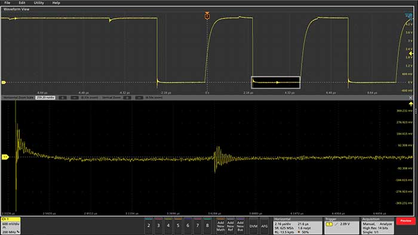

Tektronix 5 系列 MSO混合信号示波器
5 系列 MSO 具有支持手指开合、滑动和缩放操作的创新触摸屏用户界面、业内最大的高分辨率显示器以及 4、6 或 8 条 FlexChannel™ 输入通道，能够应对当前以及未来最严苛的应用挑战。它提供全新的性能、分析和友好的用户体验标准。
5 系列 MSO 混合信号示波器 模块
不仅仅采用新显示器和用户界面，更是新标准
配有 15.6 英寸高清触摸屏，让您获取更大图像和整体操作控制能力。使用支持手指开合、缩放和滑动的电容式触摸屏、前面板控件或鼠标分析和管理多个信号，而不必使用菜单操作。
拥有足够的通道
提供 4、6 或 8 条 FlexChannel 输入通道。每条通道可用于观察 1 个高分辨率模拟波形或 8 个数字逻辑波形，只需更改探头即可。
支持高达 16 位的垂直分辨率，每个细节都不会错过
12 位模拟到数字转化器，可使用高级数字信号处理提供高达 16 位垂直分辨率。对于叠加在大信号上的微小信号也能直接观察和测试到信号的细节。

立即购买所需产品。根据您的测试需求变化进行扩展。
性能- 高达 2 GHz 带宽
- 高达 125 M 点记录长度
- TLP058 逻辑探头，每个探头可提供 8 条数字通道
- 添加 Windows 操作系统，以便在示波器上运行 PC 软件
- 添加内置任意波形/函数发生器
- 串行解码/触发支持 I2C、SPI、USB 2.0、以太网、CAN、LIN 等多种总线
- 高级抖动分析
5 系列 MSO 混合信号示波器 型号
|
型号 |
模拟带宽 |
采样率 |
记录长度 |
模拟通道 |
数字通道 |
函数发生器输出 |
|
350 MHz 至 2 GHz |
6.25 GS/s |
62.5 M 点至 125 M 点 |
4 |
可达 32 条（可选） |
1 条（可选） |
|
|
350 MHz 至 2 GHz |
6.25 GS/s |
62.5 M 点至 125 M 点 |
6 |
可达 48 条（可选） |
1 条（可选） |
|
|
350 MHz 至 2 GHz |
6.25 GS/s |
62.5 M 点至 125 M 点 |
8 |
可达 64 条（可选） |
1 条（可选） |